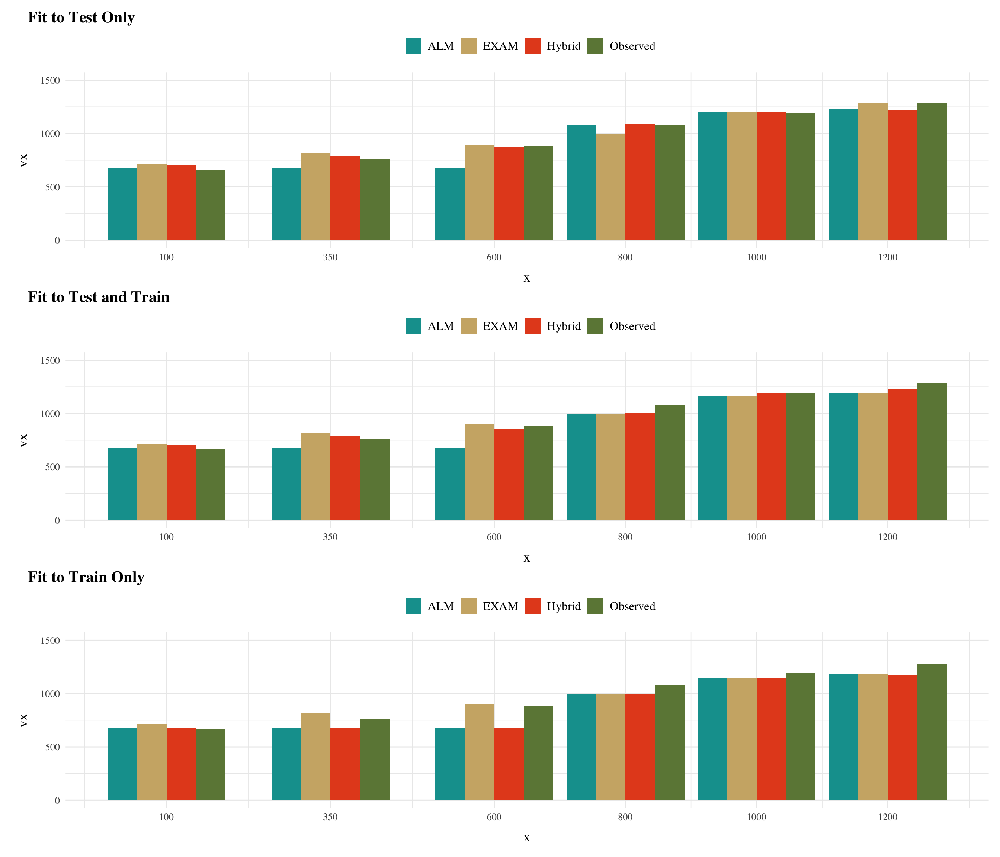
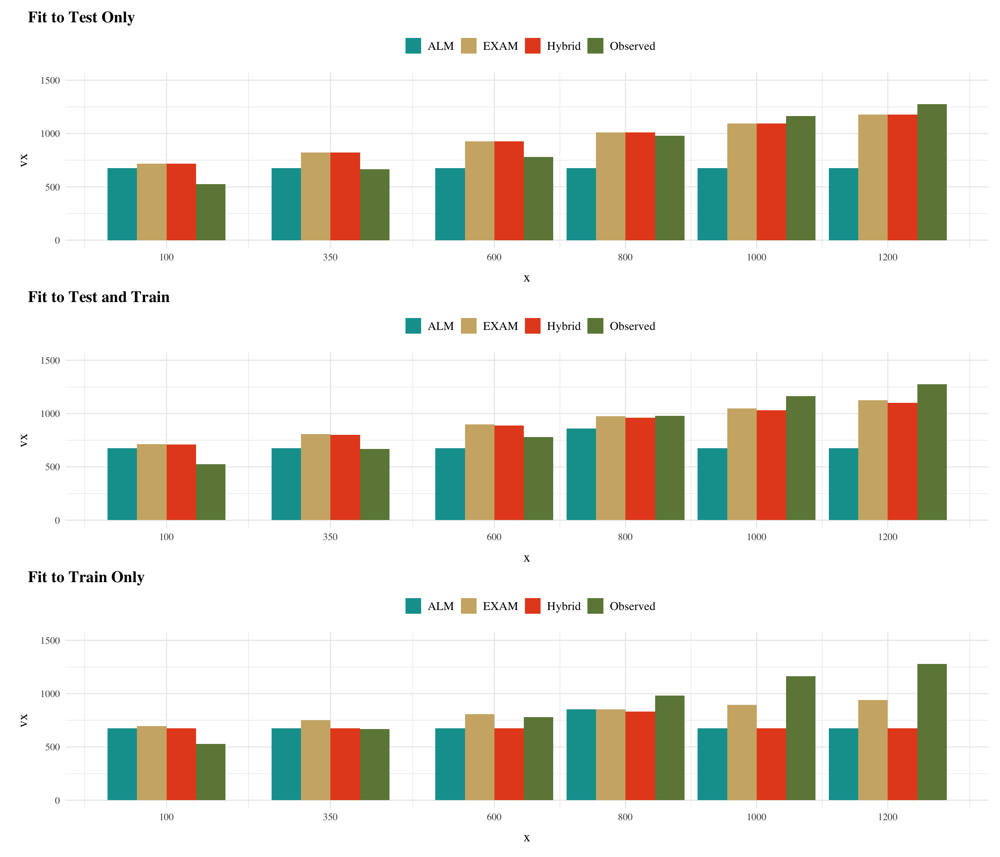

In project 1, we applied model-based techniques to quantify and control for the similarity between training and testing experience, which in turn enabled us to account for the difference between varied and constant training via an extended version of a similarity based generalization model. In project 2, we will go a step further, implementing a full process model capable of both 1) producing novel responses and 2) modeling behavior in both the learning and testing stages of the experiment. For this purpose, we will apply the associative learning model (ALM) and the EXAM model of function learning (DeLosh 1997). ALM is a simple connectionist learning model which closely resembles Kruschke’s ALCOVE model (Kruscke 1992), with modifications to allow for the generation of continuous responses.
ALM & Exam Description
DeLosh et al. (1997) introduced the associative learning model (ALM), a connectionist model within the popular class of radial-basis networks. ALM was inspired by, and closely resembles Kruschke’s influential ALCOVE model of categorization (Kruschke, 1992).
ALM is a localist neural network model, with each input node corresponding to a particular stimulus, and each output node corresponding to a particular response value. The units in the input layer activate as a function of their Gaussian similarity to the input stimulus. So, for example, an input stimulus of value 55 would induce maximal activation of the input unit tuned to 55. Depending on thevalue of the generalization parameter, the nearby units (e.g. 54 and 56; 53 and 57) may also activate to some degree. ALM is structured with input and output nodes that correspond to regions of the stimulus space, and response space, respectively. The units in the input layer activate as a function of their similarity to a presented stimulus. As was the case with the exemplar-based models, similarity in ALM is exponentially decaying function of distance. The input layer is fully connected to the output layer, and the activation for any particular output node is simply the weighted sum of the connection weights between that node and the input activations. The network then produces a response by taking the weighted average of the output units (recall that each output unit has a value corresponding to a particular response). During training, the network receives feedback which activates each output unit as a function of its distance from the ideal level of activation necessary to produce the correct response. The connection weights between input and output units are then updated via the standard delta learning rule, where the magnitude of weight changes are controlled by a learning rate parameter.
See for a full specification of the equations that define ALM and EXAM.
Following the procedure used by Mcdaniel et al. (2009), we will assess the ability of both ALM and EXAM to account for the empirical data when fitting the models to 1) only the training data, and 2) both training and testing data. Models will be fit directly to the trial by trial data of each individual participants, both by minimizing the root-mean squared deviation (RMSE), and by maximizing log likelihood. Because ALM has been shown to do poorly at accounting for human patterns extrapolation (DeLosh et al., 1997), we will also fit the extended EXAM version of the model, which operates identically to ALM during training, but includes a linear extrapolation mechanism for generating novel responses during testing.
Code
almParamsV<-cbind(Model="ALM Test Only",pluck(a_te_v, "Fit"), pluck(a_te_v, "test")%>%summarise(Test_RMSE=RMSE(y,pred)))|>rbind(cbind(Model="ALM Test & Train", pluck(a_tetr_v,"Fit"), pluck(a_tetr_v, "test")%>%summarise(Test_RMSE=RMSE(y,pred))))|>rbind(cbind(Model="ALM Train Only", pluck(a_tr_v, "Fit"), pluck(a_tr_v, "test")%>%summarise(Test_RMSE=RMSE(y,pred))))|>mutate(across(where(is.numeric), \(x)round(x, 3)))examParamsV<-cbind(Model="EXAM Test Only",pluck(ex_te_v, "Fit"), pluck(ex_te_v, "test")%>%summarise(Test_RMSE=RMSE(y,pred)))|>rbind(cbind(Model="EXAM Test & Train", pluck(ex_tetr_v,"Fit"), pluck(ex_tetr_v, "test")%>%summarise(Test_RMSE=RMSE(y,pred))))|>rbind(cbind(Model="EXAM Train Only", pluck(ex_tr_v, "Fit"), pluck(ex_tr_v, "test")%>%summarise(Test_RMSE=RMSE(y,pred))))|>mutate(across(where(is.numeric), \(x)round(x, 3)))hybridParamsV<-cbind(Model="Hybrid Test Only",pluck(hybrid_te_v, "Fit"), pluck(hybrid_te_v, "test")%>%summarise(Test_RMSE=RMSE(y,pred)))|>rbind(cbind(Model="Hybrid Test & Train", pluck(hybrid_tetr_v,"Fit"), pluck(hybrid_tetr_v, "test")%>%summarise(Test_RMSE=RMSE(y,pred))))|>rbind(cbind(Model="Hybrid Train Only", pluck(hybrid_tr_v, "Fit"), pluck(hybrid_tr_v, "test")%>%summarise(Test_RMSE=RMSE(y,pred))))|>mutate(across(where(is.numeric), \(x)round(x, 3)))almParamsC<-cbind(Model="ALM Test Only",pluck(a_te_c, "Fit"), pluck(a_te_c, "test")%>%summarise(Test_RMSE=RMSE(y,pred)))|>rbind(cbind(Model="ALM Test & Train", pluck(a_tetr_c,"Fit"), pluck(a_tetr_c, "test")%>%summarise(Test_RMSE=RMSE(y,pred))))|>rbind(cbind(Model="ALM Train Only", pluck(a_tr_c, "Fit"), pluck(a_tr_c, "test")%>%summarise(Test_RMSE=RMSE(y,pred))))|>mutate(across(where(is.numeric), \(x)round(x, 3)))examParamsC<-cbind(Model="EXAM Test Only",pluck(ex0_te_c, "Fit"), pluck(ex0_te_c, "test")%>%summarise(Test_RMSE=RMSE(y,pred)))|>rbind(cbind(Model="EXAM Test & Train", pluck(ex0_tetr_c,"Fit"), pluck(ex0_tetr_c, "test")%>%summarise(Test_RMSE=RMSE(y,pred))))|>rbind(cbind(Model="EXAM Train Only", pluck(ex0_tr_c, "Fit"), pluck(ex0_tr_c, "test")%>%summarise(Test_RMSE=RMSE(y,pred))))|>mutate(across(where(is.numeric), \(x)round(x, 3)))hybridParamsC<-cbind(Model="Hybrid Test Only",pluck(hybrid_te_c, "Fit"), pluck(hybrid_te_c, "test")%>%summarise(Test_RMSE=RMSE(y,pred)))|>rbind(cbind(Model="Hybrid Test & Train", pluck(hybrid_tetr_c,"Fit"), pluck(hybrid_tetr_c, "test")%>%summarise(Test_RMSE=RMSE(y,pred))))|>rbind(cbind(Model="Hybrid Train Only", pluck(hybrid_tr_c, "Fit"), pluck(hybrid_tr_c, "test")%>%summarise(Test_RMSE=RMSE(y,pred))))|>mutate(across(where(is.numeric), \(x)round(x, 3)))
Table 3: Constant Group - Fit Parameters and Model RMSE
ALM
Model
c
lr
Value
Test_RMSE
ALM Test Only
0
0.1
309.5
347.8
ALM Test & Train
0.047
0.08
361
328.5
ALM Train Only
0.06
0.1
32.44
329
EXAM
Model
c
lr
Value
Test_RMSE
EXAM Test Only
0.007
1.327
127.3
127.3
EXAM Test & Train
0.081
0.161
194.6
132
EXAM Train Only
0.06
0.1
32.44
199.8
Hybrid
Model
c
lr
w
Value
Test_RMSE
Hybrid Test Only
0.008
1.58
1
127.3
127.3
Hybrid Test & Train
0.067
0.134
1
194.5
136.4
Hybrid Train Only
0.042
0.067
0
31.5
330.3
Varied Testing Predictions
Code
####vte<-pluck(a_te_v, "test")|>rename(ALM=pred,Observed=y)%>%cbind(.,EXAM=pluck(ex_te_v, "test")|>pull(pred))%>%cbind(., Hybrid=pluck(hybrid_te_v, "test")|>pull(pred))|>pivot_longer(Observed:Hybrid, names_to="Model", values_to ="vx")|>ggplot(aes(x,vx,fill=Model, group=Model))+geom_bar(position="dodge",stat="identity")+scale_fill_manual(values=col_themes$wes2)+scale_x_continuous(breaks=sort(unique(ds$x)), labels=sort(unique(ds$x)))+ylim(0,1500)+theme(legend.title =element_blank(), legend.position="top")+ggtitle("Fit to Test Only")vtetr<-pluck(a_tetr_v, "test")|>rename(ALM=pred,Observed=y)%>%cbind(.,EXAM=pluck(ex_tetr_v, "test")|>pull(pred))%>%cbind(., Hybrid=pluck(hybrid_tetr_v, "test")|>pull(pred))|>pivot_longer(Observed:Hybrid, names_to="Model", values_to ="vx")|>ggplot(aes(x,vx,fill=Model, group=Model))+geom_bar(position="dodge",stat="identity")+scale_fill_manual(values=col_themes$wes2)+scale_x_continuous(breaks=sort(unique(ds$x)), labels=sort(unique(ds$x)))+ylim(0,1500)+theme(legend.title =element_blank(), legend.position="top")+ggtitle("Fit to Test and Train")vtr<-pluck(a_tr_v, "test")|>rename(ALM=pred,Observed=y)%>%cbind(.,EXAM=pluck(ex_tr_v, "test")|>pull(pred))%>%cbind(., Hybrid=pluck(hybrid_tr_v, "test")|>pull(pred))|>pivot_longer(Observed:Hybrid, names_to="Model", values_to ="vx")|>ggplot(aes(x,vx,fill=Model, group=Model))+geom_bar(position="dodge",stat="identity")+scale_fill_manual(values=col_themes$wes2)+scale_x_continuous(breaks=sort(unique(ds$x)), labels=sort(unique(ds$x)))+ylim(0,1500)+theme(legend.title =element_blank(), legend.position="top")+ggtitle("Fit to Train Only")vte/vtetr/vtr

Figure 2: Varied Group - Mean Model predictions vs. observations
Varied Testing
Code
tvte<-pluck(a_te_v, "test")|>rename(ALM=pred,Observed=y)%>%cbind(.,EXAM=pluck(ex_te_v, "test")|>pull(pred))%>%cbind(., Hybrid=pluck(hybrid_te_v, "test")|>pull(pred))tvtetr<-pluck(a_tetr_v, "test")|>rename(ALM=pred,Observed=y)%>%cbind(.,EXAM=pluck(ex_tetr_v, "test")|>pull(pred))%>%cbind(., Hybrid=pluck(hybrid_tetr_v, "test")|>pull(pred))tvtr<-pluck(a_tr_v, "test")|>rename(ALM=pred,Observed=y)%>%cbind(.,EXAM=pluck(ex_tr_v, "test")|>pull(pred))%>%cbind(., Hybrid=pluck(hybrid_tr_v, "test")|>pull(pred))pander(tvte, caption="Varied fit to test only")pander(tvtetr,caption="Varied fit to train and test")pander(tvtr,caption="Varied fit to train only")
Table 4: Varied group - mean model predictions vs. observations
Varied fit to test only
x
Observed
ALM
EXAM
Hybrid
100
663
675
715.6
708.5
350
764.2
675
817.2
792.1
600
883.9
675
895.1
874.7
800
1083
1078
1000
1091
1000
1196
1202
1199
1204
1200
1283
1230
1282
1221
Varied fit to train and test
x
Observed
ALM
EXAM
Hybrid
100
663
675
715.6
707.3
350
764.2
675
817.2
788
600
883.9
675
902
851.5
800
1083
1000
1000
1004
1000
1196
1163
1165
1196
1200
1283
1191
1194
1227
Varied fit to train only
x
Observed
ALM
EXAM
Hybrid
100
663
675
715.6
675
350
764.2
675
817.1
675
600
883.9
675
904.8
675
800
1083
999.8
999.8
999.3
1000
1196
1150
1150
1143
1200
1283
1180
1180
1176
Constant Testing Predictions
Code
####cte<-pluck(a_te_c, "test")|>rename(ALM=pred,Observed=y)%>%cbind(.,EXAM=pluck(ex0_te_c, "test")|>pull(pred))%>%cbind(., Hybrid=pluck(hybrid_te_c, "test")|>pull(pred))|>pivot_longer(Observed:Hybrid, names_to="Model", values_to ="vx")|>ggplot(aes(x,vx,fill=Model, group=Model))+geom_bar(position="dodge",stat="identity")+scale_fill_manual(values=col_themes$wes2)+scale_x_continuous(breaks=sort(unique(ds$x)), labels=sort(unique(ds$x)))+ylim(0,1500)+theme(legend.title =element_blank(), legend.position="top")+ggtitle("Fit to Test Only")ctetr<-pluck(a_tetr_c, "test")|>rename(ALM=pred,Observed=y)%>%cbind(.,EXAM=pluck(ex0_tetr_c, "test")|>pull(pred))%>%cbind(., Hybrid=pluck(hybrid_tetr_c, "test")|>pull(pred))|>pivot_longer(Observed:Hybrid, names_to="Model", values_to ="vx")|>ggplot(aes(x,vx,fill=Model, group=Model))+geom_bar(position="dodge",stat="identity")+scale_fill_manual(values=col_themes$wes2)+scale_x_continuous(breaks=sort(unique(ds$x)), labels=sort(unique(ds$x)))+ylim(0,1500)+theme(legend.title =element_blank(), legend.position="top")+ggtitle("Fit to Test and Train")ctr<-pluck(a_tr_c, "test")|>rename(ALM=pred,Observed=y)%>%cbind(.,EXAM=pluck(ex0_tr_c, "test")|>pull(pred))%>%cbind(., Hybrid=pluck(hybrid_tr_c, "test")|>pull(pred))|>pivot_longer(Observed:Hybrid, names_to="Model", values_to ="vx")|>ggplot(aes(x,vx,fill=Model, group=Model))+geom_bar(position="dodge",stat="identity")+scale_fill_manual(values=col_themes$wes2)+scale_x_continuous(breaks=sort(unique(ds$x)), labels=sort(unique(ds$x)))+ylim(0,1500)+theme(legend.title =element_blank(), legend.position="top")+ggtitle("Fit to Train Only")cte/ctetr/ctr

Figure 3: Constant Group - Mean Model predictions vs. observations
Code
tcte<-pluck(a_te_c, "test")|>rename(ALM=pred,Observed=y)%>%cbind(.,EXAM=pluck(ex0_te_c, "test")|>pull(pred))%>%cbind(., Hybrid=pluck(hybrid_te_c, "test")|>pull(pred))tctetr<-pluck(a_tetr_c, "test")|>rename(ALM=pred,Observed=y)%>%cbind(.,EXAM=pluck(ex0_tetr_c, "test")|>pull(pred))%>%cbind(., Hybrid=pluck(hybrid_tetr_c, "test")|>pull(pred))tctr<-pluck(a_tr_c, "test")|>rename(ALM=pred,Observed=y)%>%cbind(.,EXAM=pluck(ex0_tr_c, "test")|>pull(pred))%>%cbind(., Hybrid=pluck(hybrid_tr_c, "test")|>pull(pred))pander(tcte, caption="Constant fit to test only")pander(tctetr,caption="Constant fit to train and test")pander(tctr,caption="Constant fit to train only")
Table 5: Constant group - mean model predictions vs. observations
optimize_params_weighted_individual<-function(ds, c_values, lr_values, weight_exam_values, input.layer, output.layer){all_results<-list()# Loop through each unique idfor(individualinunique(ds$id)){indiv_data<-ds[ds$id==individual, ]# Run the optimization function for the individual's dataresult<-optimize_params_weighted(indiv_data, c_values, lr_values, weight_exam_values, input.layer, output.layer)all_results[[as.character(individual)]]<-result}all_results}dss<-ds|>filter(id%in%c(1,2))all_results_weighted_hybrid<-readRDS(here::here('data/model_cache/indv_hybrid_fits.rds'))ma<-map(all_results_weighted_hybrid, "best_params")|>map("c")data.frame(id=names(ma),c=as.numeric(ma))ma=cbind(id=names(all_results_weighted_hybrid),map(all_results_weighted_hybrid, "best_params")|>map_dfr(magrittr::extract,c("c","lr","weight_exam")))ds|>group_by(id,condit)|>distinct(id,condit)|>left_join(ma,by=join_by(id))map(all_results_weighted_hybrid,"best_params")|>pluck("c")all_results_weighted_hybrid[["1"]]$bmap(~map(.x$best_params, pluck, "c"))map_df(~map_df(.x$train, pluck, "d"), .id ="density")
References
DeLosh, E. L., McDaniel, M. A., & Busemeyer, J. R. (1997). Extrapolation: The Sine Qua Non for Abstraction in Function Learning. Journal of Experimental Psychology: Learning, Memory, and Cognition, 23(4), 19. https://doi.org/10.1037/0278-7393.23.4.968
Mcdaniel, M. A., Dimperio, E., Griego, J. A., & Busemeyer, J. R. (2009). Predicting transfer performance: A comparison of competing function learning models. Journal of Experimental Psychology. Learning, Memory, and Cognition, 35, 173–195. https://doi.org/10.1037/a0013982
Source Code
---title: EXAM Fits and Predictionsdate: last-modifiedcategories: [Simulation, ALM, EXAM, R]code-fold: truecode-tools: trueexecute: warning: false eval: truehugo-md: html-math-method: mathjax---```{r}# load and view datapacman::p_load(tidyverse,patchwork,here, pander, latex2exp)purrr::walk(here::here(c("Functions/Display_Functions.R", "Functions/alm_core.R","Functions/misc_model_funs.R")),source)select <- dplyr::select; mutate <- dplyr::mutate ds <-readRDS(here::here("data/e1_md_11-06-23.rds"))dsAvg <- ds |>group_by(condit,expMode2,tr, x) |>summarise(y=mean(y),.groups="keep") vAvg <- dsAvg |>filter(condit=="Varied")cAvg <- dsAvg |>filter(condit=="Constant")i1 <- ds |>filter(id=="3")input.layer <-c(100,350,600,800,1000,1200)output.layer <-c(100,350,600,800,1000,1200)purrr::walk(c("con_group_exam_fits", "var_group_exam_fits", "hybrid_group_exam_fits"), ~list2env(readRDS(here::here(paste0("data/model_cache/", .x, ".rds"))), envir = .GlobalEnv))``````{r}#| label: fig-alm-diagram#| fig.cap: The basic structure of the ALM model. pacman::p_load(tidyverse,ggplot2,igraph,ggraph) inNodes <-c("exp(c * (100 - Stim)^2)", "exp(c * (350 - Stim)^2)", "exp(c * (600 - Stim)^2)", "exp(c * (800 - Stim)^2)", "exp(c * (1000 - Stim)^2)", "exp(c * (1200 - Stim)^2)")outNodes <-c(100,350,600,800,1000,1200) %>%as.integer()stim <-"Stim"resp <-"Response"inFlow <-tibble(expand.grid(from=stim,to=inNodes)) %>%mutate_all(as.character)outFlow <-tibble(expand.grid(from=outNodes,to=resp)) %>%mutate_all(as.character)gd <-tibble(expand.grid(from=inNodes,to=outNodes)) %>%mutate_all(as.character) %>%rbind(inFlow,.) %>%rbind(.,outFlow)g =graph_from_data_frame(gd,directed=TRUE)coords2=layout_as_tree(g)colnames(coords2)=c("y","x")odf <-as_tibble(coords2) %>%mutate(label=vertex_attr(g,"name"),type=c("stim",rep("Input",length(inNodes)),rep("Output",length(outNodes)),"Resp"),x=x*-1) %>%mutate(y=ifelse(type=="Resp",0,y),# Adjust the width of input nodesxmin=ifelse(type=="Input", x-0.3, x-0.08),xmax=ifelse(type=="Input", x+0.3, x+0.08),ymin=y-.30, ymax=y+.30)input_y <- odf %>%filter(type =="Input") %>%pull(y)output_y <- odf %>%filter(type =="Output") %>%pull(y)avg_input_y <-mean(input_y)avg_output_y <-mean(output_y)y_adjustment <- avg_input_y - avg_output_yodf <- odf %>%mutate(y =ifelse(type =="Output", y + y_adjustment, y), ymax =ifelse(type =="Output", ymax + y_adjustment, ymax),ymin =ifelse(type =="Output", ymin + y_adjustment, ymin))plot_edges = gd %>%mutate(id=row_number()) %>%pivot_longer(cols=c("from","to"),names_to="s_e",values_to=("label")) %>%mutate(label=as.character(label)) %>%group_by(id) %>%mutate(weight=sqrt(rnorm(1,mean=0,sd=10)^2)/10) %>%left_join(odf,by="label") %>%mutate(xmin=xmin+.02,xmax=xmax-.02)lab <- inNodesnames(lab) <- inNodeslab <-lapply(lab, function(x) paste0("bold(", x, ")")) # Bold the entire expressionlab <-sapply(lab, as.character)ggplot() +geom_rect(data = odf, aes(xmin = xmin, xmax = xmax, ymin = ymin, ymax = ymax, fill = type), alpha =0.2) +annotate("text", x = odf$x[odf$type =="Input"], y = odf$y[odf$type =="Input"], label = lab, parse =TRUE, size =3) +geom_text(data = odf %>%filter(type !="Input"), aes(x = x, y = y, label = label), size =3, fontface="bold") +geom_path(data = plot_edges, aes(x = x, y = y, group = id, alpha = weight), alpha=.2) +theme_void() +theme(legend.position ="none")```# ModelingIn project 1, we applied model-based techniques to quantify and control for the similarity between training and testing experience, which in turn enabled us to account for the difference between varied and constant training via an extended version of a similarity based generalization model. In project 2, we will go a step further, implementing a full process model capable of both 1) producing novel responses and 2) modeling behavior in both the learning and testing stages of the experiment. For this purpose, we will apply the associative learning model (ALM) and the EXAM model of function learning (DeLosh 1997). ALM is a simple connectionist learning model which closely resembles Kruschke's ALCOVE model (Kruscke 1992), with modifications to allow for the generation of continuous responses.## ALM & Exam Description@deloshExtrapolationSineQua1997 introduced the associative learning model (ALM), a connectionist model within the popular class of radial-basis networks. ALM was inspired by, and closely resembles Kruschke's influential ALCOVE model of categorization [@kruschkeALCOVEExemplarbasedConnectionist1992]. ALM is a localist neural network model, with each input node corresponding to a particular stimulus, and each output node corresponding to a particular response value. The units in the input layer activate as a function of their Gaussian similarity to the input stimulus. So, for example, an input stimulus of value 55 would induce maximal activation of the input unit tuned to 55. Depending on thevalue of the generalization parameter, the nearby units (e.g. 54 and 56; 53 and 57) may also activate to some degree. ALM is structured with input and output nodes that correspond to regions of the stimulus space, and response space, respectively. The units in the input layer activate as a function of their similarity to a presented stimulus. As was the case with the exemplar-based models, similarity in ALM is exponentially decaying function of distance. The input layer is fully connected to the output layer, and the activation for any particular output node is simply the weighted sum of the connection weights between that node and the input activations. The network then produces a response by taking the weighted average of the output units (recall that each output unit has a value corresponding to a particular response). During training, the network receives feedback which activates each output unit as a function of its distance from the ideal level of activation necessary to produce the correct response. The connection weights between input and output units are then updated via the standard delta learning rule, where the magnitude of weight changes are controlled by a learning rate parameter.See for a full specification of the equations that define ALM and EXAM.{{< pagebreak >}}## Model Table::: {.column-page-inset-right}| Step | Equation | Description ||------|----------|-------------|| **ALM Activation & Response** | || Input Activation | $a_i(X) = \frac{e^{-c(X-X_i)^2}}{\sum_{k=1}^M e^{-c(X-X_k)^2}}$ | Activation of each input node $X_i$, is a function of the Gaussian similarity between the node value and stimulus X. || Output Activation | $O_j(X) = \sum_{k=1}^M w_{ji} \cdot a_i(X)$ | Activation of each Output unit $O_j$ is the weighted sum of the input activations and association weights. || Output Probability | $P[Y_j|X] = \frac{O_j(X)}{\sum_{k=1}^M O_k(X)}$ | Each output node has associated response, $Y_j$. The probability of response $Y_j$ is determined by the ratio of output activations. || Mean Output | $m(x) = \sum_{j=1}^L Y_j \cdot \frac{O_j(x)}{\sum_{k=1}^M O_k(X)}$ | The response to stimulus x is the weighted average of the response probabilities. || **ALM Learning** | || Feedback Activation | $f_j(Z) = e^{-c(Z-Y_j)^2}$ | After responding, feedback signal Z is presented, activating each output node via the Gaussian similarity to the ideal response. || Update Weights | $w_{ji}(t + 1) = w_{ji}(t) + \alpha \cdot (f_j(Z(t)) - O_j(X(t)) \cdot a_i(X(t))$ | Delta rule to update weights. Magnitude of weight changes controlled by learning rate parameter alpha. | | **EXAM** | || Extrapolation | $P[X_i|X] = \frac{a_i(X)}{\sum_{k=1}^M a_k(X)}$ | Novel test stimulus X activates input nodes associated with trained stimuli. || | $E[Y|X_i] = m(X_i) + \frac{m(X_{i+1})-m(X_{i-1})}{X_{i+1}-X_{i-1}} \cdot [X - X_i]$ | Slope value computed from nearest training instances and then added to the response associated with the nearest training instance,m(x) | : ALM & EXAM Equations {#tbl-alm-exam}:::see @tbl-alm-exam{{< pagebreak >}}## Model Fitting and ComparisonFollowing the procedure used by @mcdanielPredictingTransferPerformance2009, we will assess the ability of both ALM and EXAM to account for the empirical data when fitting the models to 1) only the training data, and 2) both training and testing data. Models will be fit directly to the trial by trial data of each individual participants, both by minimizing the root-mean squared deviation (RMSE), and by maximizing log likelihood. Because ALM has been shown to do poorly at accounting for human patterns extrapolation [@deloshExtrapolationSineQua1997], we will also fit the extended EXAM version of the model, which operates identically to ALM during training, but includes a linear extrapolation mechanism for generating novel responses during testing.```{r}almParamsV <-cbind(Model="ALM Test Only",pluck(a_te_v, "Fit"), pluck(a_te_v, "test") %>%summarise(Test_RMSE=RMSE(y,pred)) ) |>rbind(cbind(Model="ALM Test & Train", pluck(a_tetr_v,"Fit"), pluck(a_tetr_v, "test") %>%summarise(Test_RMSE=RMSE(y,pred)))) |>rbind(cbind(Model="ALM Train Only", pluck(a_tr_v, "Fit"), pluck(a_tr_v, "test") %>%summarise(Test_RMSE=RMSE(y,pred)))) |>mutate(across(where(is.numeric), \(x) round(x, 3)))examParamsV <-cbind(Model="EXAM Test Only",pluck(ex_te_v, "Fit"), pluck(ex_te_v, "test") %>%summarise(Test_RMSE=RMSE(y,pred))) |>rbind(cbind(Model="EXAM Test & Train", pluck(ex_tetr_v,"Fit"), pluck(ex_tetr_v, "test") %>%summarise(Test_RMSE=RMSE(y,pred)))) |>rbind(cbind(Model="EXAM Train Only", pluck(ex_tr_v, "Fit"), pluck(ex_tr_v, "test") %>%summarise(Test_RMSE=RMSE(y,pred)))) |>mutate(across(where(is.numeric), \(x) round(x, 3)))hybridParamsV <-cbind(Model="Hybrid Test Only",pluck(hybrid_te_v, "Fit"), pluck(hybrid_te_v, "test") %>%summarise(Test_RMSE=RMSE(y,pred))) |>rbind(cbind(Model="Hybrid Test & Train", pluck(hybrid_tetr_v,"Fit"), pluck(hybrid_tetr_v, "test") %>%summarise(Test_RMSE=RMSE(y,pred)))) |>rbind(cbind(Model="Hybrid Train Only", pluck(hybrid_tr_v, "Fit"), pluck(hybrid_tr_v, "test") %>%summarise(Test_RMSE=RMSE(y,pred)))) |>mutate(across(where(is.numeric), \(x) round(x, 3)))almParamsC <-cbind(Model="ALM Test Only",pluck(a_te_c, "Fit"), pluck(a_te_c, "test") %>%summarise(Test_RMSE=RMSE(y,pred)) ) |>rbind(cbind(Model="ALM Test & Train", pluck(a_tetr_c,"Fit"), pluck(a_tetr_c, "test") %>%summarise(Test_RMSE=RMSE(y,pred)))) |>rbind(cbind(Model="ALM Train Only", pluck(a_tr_c, "Fit"), pluck(a_tr_c, "test") %>%summarise(Test_RMSE=RMSE(y,pred)))) |>mutate(across(where(is.numeric), \(x) round(x, 3)))examParamsC <-cbind(Model="EXAM Test Only",pluck(ex0_te_c, "Fit"), pluck(ex0_te_c, "test") %>%summarise(Test_RMSE=RMSE(y,pred))) |>rbind(cbind(Model="EXAM Test & Train", pluck(ex0_tetr_c,"Fit"), pluck(ex0_tetr_c, "test") %>%summarise(Test_RMSE=RMSE(y,pred)))) |>rbind(cbind(Model="EXAM Train Only", pluck(ex0_tr_c, "Fit"), pluck(ex0_tr_c, "test") %>%summarise(Test_RMSE=RMSE(y,pred)))) |>mutate(across(where(is.numeric), \(x) round(x, 3)))hybridParamsC <-cbind(Model="Hybrid Test Only",pluck(hybrid_te_c, "Fit"), pluck(hybrid_te_c, "test") %>%summarise(Test_RMSE=RMSE(y,pred))) |>rbind(cbind(Model="Hybrid Test & Train", pluck(hybrid_tetr_c,"Fit"), pluck(hybrid_tetr_c, "test") %>%summarise(Test_RMSE=RMSE(y,pred)))) |>rbind(cbind(Model="Hybrid Train Only", pluck(hybrid_tr_c, "Fit"), pluck(hybrid_tr_c, "test") %>%summarise(Test_RMSE=RMSE(y,pred)))) |>mutate(across(where(is.numeric), \(x) round(x, 3)))``````{r}#| label: tbl-e1-model-fits2V#| tbl-cap: Varied Group - Fit Parameters and Model RMSEpander(almParamsV, caption="ALM"); pander(examParamsV, caption="EXAM"); pander(hybridParamsV,caption="Hybrid") ``````{r}#| label: tbl-e1-model-fitsC#| tbl-cap: Constant Group - Fit Parameters and Model RMSEpander(almParamsC, caption="ALM"); pander(examParamsC, caption="EXAM"); pander(hybridParamsC,caption="Hybrid")```## Varied Testing Predictions```{r}#| label: fig-model-preds-varied#| fig-cap: Varied Group - Mean Model predictions vs. observations#| fig-height: 12#| fig-width: 14#| column: screen-inset-right####vte <-pluck(a_te_v, "test") |>rename(ALM=pred,Observed=y) %>%cbind(.,EXAM=pluck(ex_te_v, "test") |>pull(pred)) %>%cbind(., Hybrid=pluck(hybrid_te_v, "test") |>pull(pred)) |>pivot_longer(Observed:Hybrid, names_to="Model", values_to ="vx") |>ggplot(aes(x,vx,fill=Model, group=Model)) +geom_bar(position="dodge",stat="identity") +scale_fill_manual(values=col_themes$wes2)+scale_x_continuous(breaks=sort(unique(ds$x)), labels=sort(unique(ds$x)))+ylim(0,1500) +theme(legend.title =element_blank(), legend.position="top") +ggtitle("Fit to Test Only")vtetr <-pluck(a_tetr_v, "test") |>rename(ALM=pred,Observed=y) %>%cbind(.,EXAM=pluck(ex_tetr_v, "test") |>pull(pred)) %>%cbind(., Hybrid=pluck(hybrid_tetr_v, "test") |>pull(pred)) |>pivot_longer(Observed:Hybrid, names_to="Model", values_to ="vx") |>ggplot(aes(x,vx,fill=Model, group=Model)) +geom_bar(position="dodge",stat="identity") +scale_fill_manual(values=col_themes$wes2)+scale_x_continuous(breaks=sort(unique(ds$x)), labels=sort(unique(ds$x)))+ylim(0,1500) +theme(legend.title =element_blank(), legend.position="top") +ggtitle("Fit to Test and Train")vtr <-pluck(a_tr_v, "test") |>rename(ALM=pred,Observed=y) %>%cbind(.,EXAM=pluck(ex_tr_v, "test") |>pull(pred)) %>%cbind(., Hybrid=pluck(hybrid_tr_v, "test") |>pull(pred)) |>pivot_longer(Observed:Hybrid, names_to="Model", values_to ="vx") |>ggplot(aes(x,vx,fill=Model, group=Model)) +geom_bar(position="dodge",stat="identity") +scale_fill_manual(values=col_themes$wes2)+scale_x_continuous(breaks=sort(unique(ds$x)), labels=sort(unique(ds$x)))+ylim(0,1500) +theme(legend.title =element_blank(), legend.position="top") +ggtitle("Fit to Train Only")vte/vtetr/vtr```## Varied Testing```{r fig.height=11, fig.width=11}#| label: tbl-e1-predsV#| tbl-cap: Varied group - mean model predictions vs. observations#| tvte<- pluck(a_te_v, "test") |> rename(ALM=pred,Observed=y) %>% cbind(.,EXAM=pluck(ex_te_v, "test") |> pull(pred)) %>% cbind(., Hybrid=pluck(hybrid_te_v, "test") |> pull(pred))tvtetr<-pluck(a_tetr_v, "test") |> rename(ALM=pred,Observed=y) %>% cbind(.,EXAM=pluck(ex_tetr_v, "test") |> pull(pred)) %>% cbind(., Hybrid=pluck(hybrid_tetr_v, "test") |> pull(pred))tvtr<- pluck(a_tr_v, "test") |> rename(ALM=pred,Observed=y) %>% cbind(.,EXAM=pluck(ex_tr_v, "test") |> pull(pred)) %>% cbind(., Hybrid=pluck(hybrid_tr_v, "test") |> pull(pred))pander(tvte, caption="Varied fit to test only")pander(tvtetr,caption="Varied fit to train and test")pander(tvtr,caption="Varied fit to train only")```## Constant Testing Predictions```{r}#| label: fig-model-preds-constant#| fig-cap: Constant Group - Mean Model predictions vs. observations#| fig-height: 12#| fig-width: 14#| column: screen-inset-right####cte <-pluck(a_te_c, "test") |>rename(ALM=pred,Observed=y) %>%cbind(.,EXAM=pluck(ex0_te_c, "test") |>pull(pred)) %>%cbind(., Hybrid=pluck(hybrid_te_c, "test") |>pull(pred)) |>pivot_longer(Observed:Hybrid, names_to="Model", values_to ="vx") |>ggplot(aes(x,vx,fill=Model, group=Model)) +geom_bar(position="dodge",stat="identity") +scale_fill_manual(values=col_themes$wes2)+scale_x_continuous(breaks=sort(unique(ds$x)), labels=sort(unique(ds$x)))+ylim(0,1500) +theme(legend.title =element_blank(), legend.position="top") +ggtitle("Fit to Test Only")ctetr <-pluck(a_tetr_c, "test") |>rename(ALM=pred,Observed=y) %>%cbind(.,EXAM=pluck(ex0_tetr_c, "test") |>pull(pred)) %>%cbind(., Hybrid=pluck(hybrid_tetr_c, "test") |>pull(pred)) |>pivot_longer(Observed:Hybrid, names_to="Model", values_to ="vx") |>ggplot(aes(x,vx,fill=Model, group=Model)) +geom_bar(position="dodge",stat="identity") +scale_fill_manual(values=col_themes$wes2)+scale_x_continuous(breaks=sort(unique(ds$x)), labels=sort(unique(ds$x)))+ylim(0,1500) +theme(legend.title =element_blank(), legend.position="top") +ggtitle("Fit to Test and Train")ctr <-pluck(a_tr_c, "test") |>rename(ALM=pred,Observed=y) %>%cbind(.,EXAM=pluck(ex0_tr_c, "test") |>pull(pred)) %>%cbind(., Hybrid=pluck(hybrid_tr_c, "test") |>pull(pred)) |>pivot_longer(Observed:Hybrid, names_to="Model", values_to ="vx") |>ggplot(aes(x,vx,fill=Model, group=Model)) +geom_bar(position="dodge",stat="identity") +scale_fill_manual(values=col_themes$wes2)+scale_x_continuous(breaks=sort(unique(ds$x)), labels=sort(unique(ds$x)))+ylim(0,1500) +theme(legend.title =element_blank(), legend.position="top") +ggtitle("Fit to Train Only")cte/ctetr/ctr``````{r}#| label: tbl-e1-predsC#| tbl-cap: Constant group - mean model predictions vs. observations#| tcte<-pluck(a_te_c, "test") |>rename(ALM=pred,Observed=y) %>%cbind(.,EXAM=pluck(ex0_te_c, "test") |>pull(pred)) %>%cbind(., Hybrid=pluck(hybrid_te_c, "test") |>pull(pred))tctetr<-pluck(a_tetr_c, "test") |>rename(ALM=pred,Observed=y) %>%cbind(.,EXAM=pluck(ex0_tetr_c, "test") |>pull(pred)) %>%cbind(., Hybrid=pluck(hybrid_tetr_c, "test") |>pull(pred))tctr<-pluck(a_tr_c, "test") |>rename(ALM=pred,Observed=y) %>%cbind(.,EXAM=pluck(ex0_tr_c, "test") |>pull(pred)) %>%cbind(., Hybrid=pluck(hybrid_tr_c, "test") |>pull(pred))pander(tcte, caption="Constant fit to test only")pander(tctetr,caption="Constant fit to train and test")pander(tctr,caption="Constant fit to train only")``````{r}#| eval: falsepluck(a_te_v, "train") |>pivot_longer(y:almResp, names_to="Resp", values_to ="vx") |>mutate(dev=x-vx,abs_dev=abs(x-vx)) |>learn_curve_plot(tr, vx, Resp,facet_var=x, groupVec=Resp,nbins=8)pluck(a_te_v, "train") |>pivot_longer(y:almResp, names_to="Resp", values_to ="vx") |>mutate(dev=x-vx,abs_dev=abs(x-vx)) |>ungroup() %>%gather(key ="variable", value ="y_value", dev, abs_dev, vx) %>%group_by(variable) %>%group_map(~learn_curve_plot(.x, x_var = tr, y_var = y_value, color_var = Resp, facet_var = x, groupVec = Resp, nbins =8, y_label = .y$variable), .keep =TRUE)list(a_tr_v, a_te_v,a_tetr_v) |>map( ~{pluck(.x, "train") |>pivot_longer(y:almResp, names_to="Resp", values_to ="vx") |>mutate(dev=x-vx,abs_dev=abs(x-vx)) |>ungroup() %>%gather(key ="variable", value ="y_value", dev, abs_dev, vx) %>%group_by(variable) %>%group_map(~learn_curve_plot(.x, x_var = tr, y_var = y_value, color_var = Resp, facet_var = x, groupVec = Resp, nbins =8, y_label = .y$variable), .keep =TRUE) })```# EXAM fit learning curves```{r}#| eval: falsepluck(ex_te_v, "train") |>pivot_longer(y:almResp, names_to="Resp", values_to ="vx") |>mutate(dev=x-vx,abs_dev=abs(x-vx)) |>learn_curve_plot(tr, vx, Resp,facet_var=x, groupVec=Resp,nbins=8)pluck(ex_te_v, "train") |>pivot_longer(y:almResp, names_to="Resp", values_to ="vx") |>mutate(dev=x-vx,abs_dev=abs(x-vx)) |>ungroup() %>%gather(key ="variable", value ="y_value", dev, abs_dev, vx) %>%group_by(variable) %>%group_map(~learn_curve_plot(.x, x_var = tr, y_var = y_value, color_var = Resp, facet_var = x, groupVec = Resp, nbins =8, y_label = .y$variable), .keep =TRUE)``````{r}#| eval: falseoptimize_params_weighted_individual <-function(ds, c_values, lr_values, weight_exam_values, input.layer, output.layer) { all_results <-list()# Loop through each unique idfor (individual inunique(ds$id)) { indiv_data <- ds[ds$id == individual, ]# Run the optimization function for the individual's data result <-optimize_params_weighted(indiv_data, c_values, lr_values, weight_exam_values, input.layer, output.layer) all_results[[as.character(individual)]] <- result } all_results}dss <- ds |>filter(id %in%c(1,2))all_results_weighted_hybrid <-readRDS(here::here('data/model_cache/indv_hybrid_fits.rds'))ma <-map(all_results_weighted_hybrid, "best_params") |>map("c")data.frame(id=names(ma),c=as.numeric(ma))ma =cbind(id=names(all_results_weighted_hybrid),map(all_results_weighted_hybrid, "best_params") |>map_dfr(magrittr::extract,c("c","lr","weight_exam")))ds |>group_by(id,condit) |>distinct(id,condit) |>left_join(ma,by=join_by(id))map(all_results_weighted_hybrid,"best_params") |>pluck("c")all_results_weighted_hybrid[["1"]]$bmap(~map(.x$best_params, pluck, "c"))map_df(~map_df(.x$train, pluck, "d"), .id ="density")```